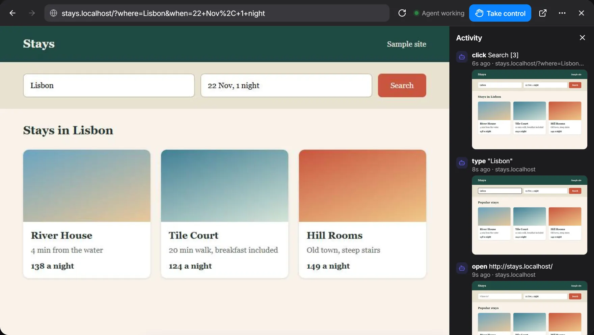

Browser
Websites in a pop-up over any page. You and the assistant can both work in it, and you stay signed in.

Open it
The Browser isn’t a tab. It opens when you click a website on Home, click a site from the chat or the assistant opens a page.
It needs Google Chrome installed on your PC. LocalHub doesn’t install Chrome for you. It starts Chrome when needed, keeps it apart from the Chrome you browse in, and Chrome closes itself after 10 minutes unused.
Use it
Along the top are back, forward, the address, refresh, tabs and Close. More holds New tab, Show activity and Fit to this screen.
Signing in
Sign in once and it stays that way. Some sites refuse a sign-in from a hidden window. If so, choose More, then Show window on this computer, sign in there, then choose Run hidden.
Working with the assistant
While the assistant works, a pill at the top says so. Press Take control to step in and Give back when you’re done. If it’s been quiet for 20 seconds, typing or clicking takes control by itself.
What it won’t do
- Downloads are off.
- It only opens
httpandhttpsaddresses. - A page’s pop-up question appears as a line above the page, with OK and Cancel.
- There’s no screen yet for adding more browser profiles.
Messages you might see
- The browser is closed
- It closed after sitting unused. Press Open browser. Your sign-ins are still there.
- Reconnecting…
- LocalHub is restarting or the link dropped. It comes back by itself.
- Chrome is not installed
- Install Google Chrome, then try again.
- Chrome exited at start
- The profile may be open in another Chrome. Close that one and try again.